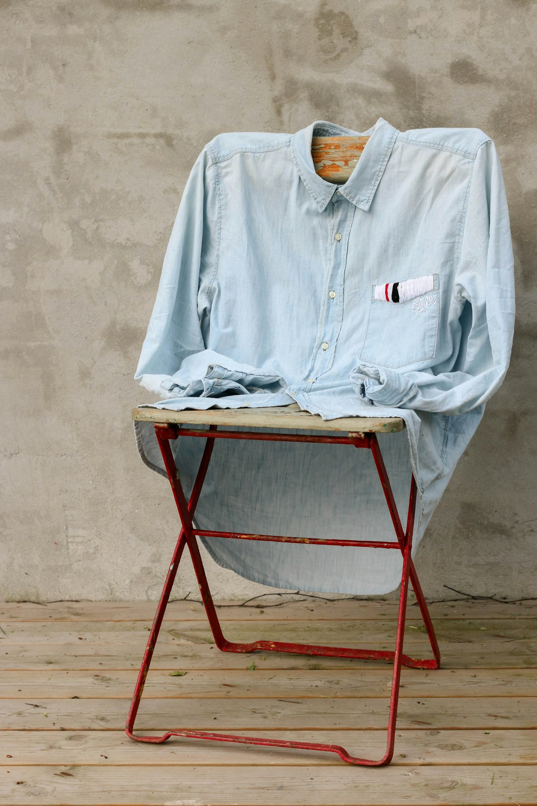
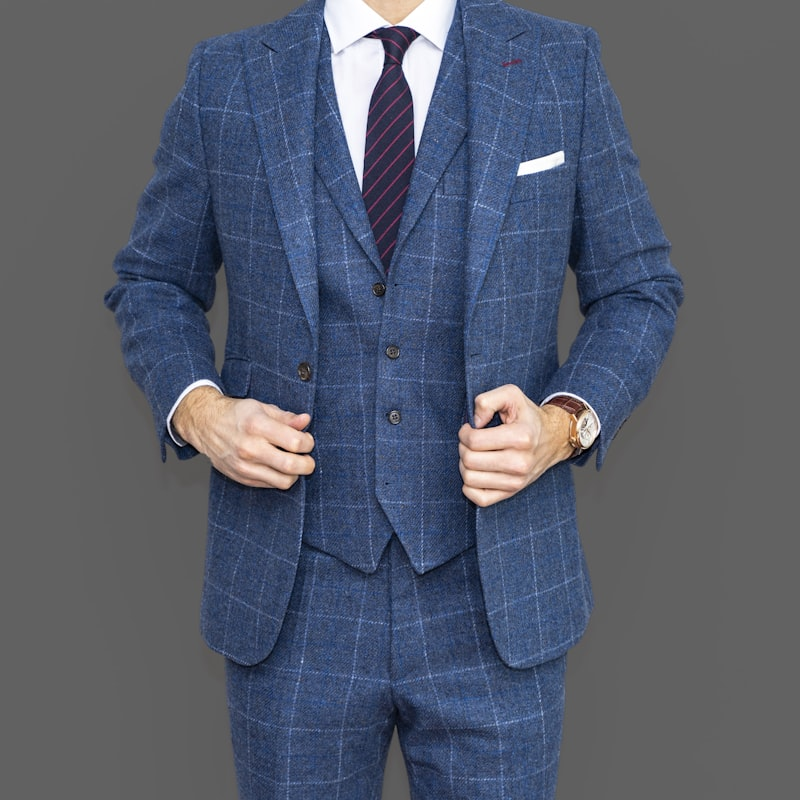
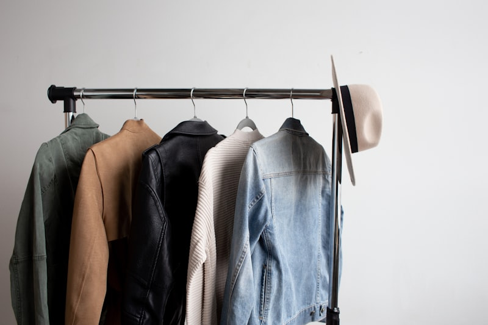

The best fabric I ever touched was a wool I found at a dead stock warehouse in downtown Los Angeles, rolled into a bolt so dark it looked like someone had woven the last hour before sunrise. I bought the entire roll without checking the yardage. Didn't matter. Whatever was there, I'd use it. Some materials tell you what they want to become before you've made a single cut.
That bolt became the backbone of Nocturne — not because I planned it, but because the cloth wouldn't let me work on anything else. I'd sit down to sketch a different piece and my hand would reach for the wool instead. Drag it across the table. Hold it up against the window where the streetlight came through. Fabric like that has gravity. It pulls the rest of the collection toward it.
There is no part of this process that happens on a screen first. I know that sounds like a stance, but it's not — it's just the way my hands work. I need to feel the weight of the thing before I can think about it clearly. A swatch pinned to a board tells me more than a mood board ever could. The drape is the idea. Everything else is annotation.

The original bolt. Dead stock wool, downtown Los Angeles, weight unknown.
What Cloth Knows
Every fabric has a memory. Not metaphorically — structurally. Wool remembers where it's been pressed. Linen holds a crease like a grudge. Silk forgets everything the moment you let it go, which is why silk is so difficult to build with and so beautiful when it moves. You are always negotiating with the material. The cloth has opinions.
I think about this when people talk about “designing” a garment as though it's a solo act. It isn't. The fabric is the other voice in the conversation. You propose a shape. The cloth accepts it, resists it, or offers something you hadn't considered. The best pieces come from the third option — the ones where the material took the design somewhere I didn't intend to go.
Yohji Yamamoto said something once about letting the fabric lead. Most people treat that as poetic. It's not. It's technical instruction. You cut into a bias and the grain does something your pattern didn't predict. You can fight it or you can follow it. Following takes more skill.
The drape is the idea. Everything else is annotation. Willie Austin
With this particular wool, the conversation was about weight. Not heaviness — presence. The cloth fell straight but not stiff. It moved when the body moved but it didn't chase. There was a delay, almost imperceptible, between the person turning and the fabric following. That delay became everything. I started designing around it. Not the color, not the texture — the timing.

Weight study: how the wool falls on a half-constructed shoulder. The delay between body and fabric is the whole point.
Designing at Night
Most of Nocturne was made between ten at night and three in the morning. Not by choice, originally — I just kept losing track of time, and by the time I looked up, the studio had gone dark except for the cutting table lamp and the glow from the parking lot outside. But the work was different at night. Quieter. Less performative. There's nobody to explain your decisions to at 1 AM, so you stop explaining them to yourself and just make the cut.
The collection absorbed that. I didn't set out to design dark clothes. But when you work in a room where the only light hits the table and everything else falls away, you start building garments that live in that same tonal range. The blacks aren't true black. They're the black of a room with one lamp on — warm, dimensional, full of color if you look closely enough. Pour a glass of red wine next to a piece of charcoal and you'll see what I mean. Both are dark. Neither is the same dark.
Burnt sienna entered the palette because of a rust stain. Genuinely. A pair of old shears left a mark on a muslin sample and I spent twenty minutes staring at it, at the way this warm accidental orange sat against the grey. I photographed it. Pinned the muslin to the wall. Built four looks around a stain.
People want the origin story of a collection to be a trip to Japan or an old film or a philosopher they read in college. Sometimes it's a rust stain on a Tuesday.

The studio after midnight. One lamp, one table, the rest of the room gone.
Cloth and Time
The thing nobody talks about in fashion is what happens to a garment after you buy it. Not wear and tear — transformation. A wool coat on its first wearing is a stranger. Stiff in the shoulders, too precise, holding itself apart from the body like a handshake with someone you've just met. Give it six months and the fibers have learned the shape of the person inside. The shoulders soften to fit this particular slouch. The elbows develop a bend that belongs to these arms. The garment becomes a document of the wearer.
I design for that version — not the one on the hanger, but the one that's been lived in for a year. Which means accepting that the finished garment I send into the world isn't actually finished. It's a starting point. The wearer finishes it by wearing it, and every wearer finishes it differently.
This is what most fashion photography gets wrong. It shows you the garment at its most pristine, its most controlled — fresh off the rack, steamed, clipped, pinned in back where the camera can't see. The garment as fiction. I'd rather see the coat in its third winter, pocket stretched from carrying too many things, collar slightly different on one side because the wearer always turns their head the same direction in wind.
That's not damage. That's the garment doing its job.

The same jacket, six months apart. Left: first fitting. Right: after a season of wear.
What Stays
I still have the original bolt. There's maybe four yards left — not enough for a full garment, enough for a conversation. I keep it on the shelf next to the cutting table where I can reach it without standing up. Sometimes between projects, when I don't know what to make next, I pull a corner off the shelf and let it fall over my hand and remember what it felt like to find something that already knew what it wanted to be.
That's the whole practice, really. You don't go looking for ideas. You put yourself in rooms where materials are, and you pay attention, and eventually something — a weight, a color, a rust stain — tells you where to start. The rest is just following the thread.
Literally.